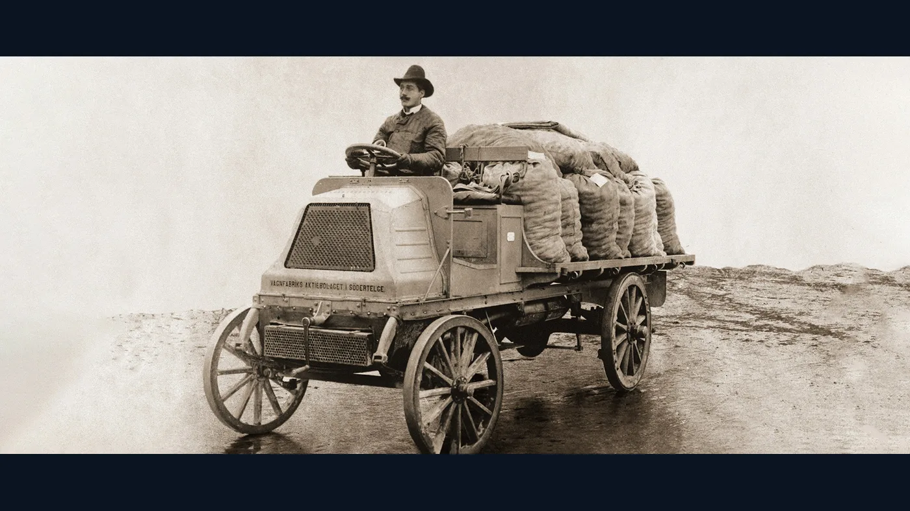
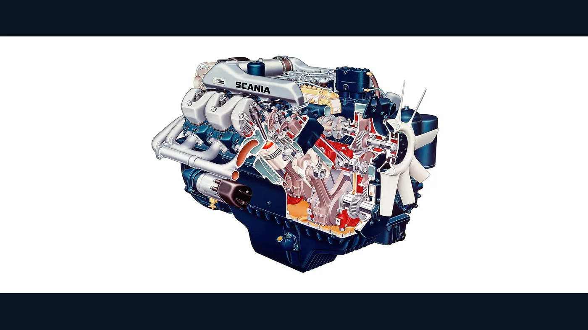
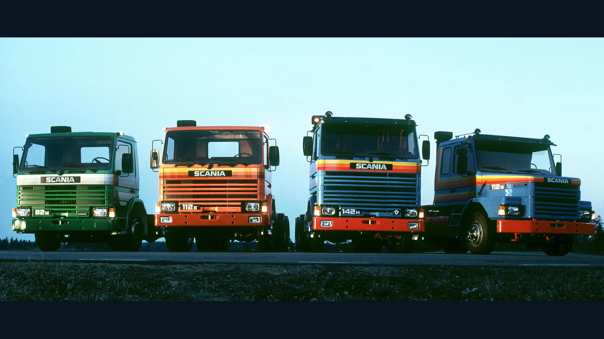
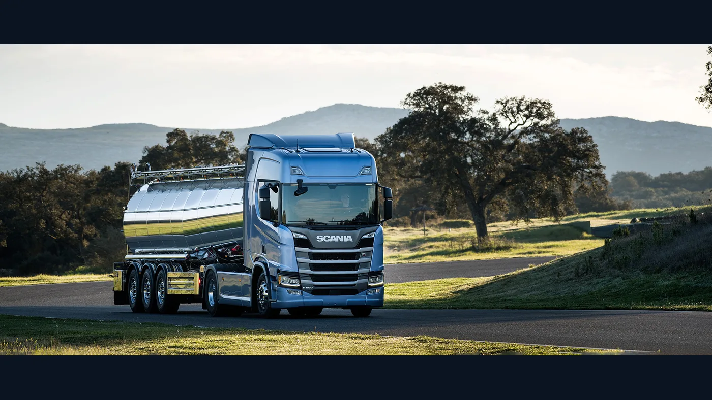

La historia de los camiones Scania comenzó mucho antes de que los modelos 111, 112 o 113 se volvieran familiares en las rutas argentinas. Se remonta a dos empresas suecas, a los primeros experimentos con vehículos de carga y a una forma de diseñar componentes que permitió construir familias de camiones para trabajos muy distintos.
También tiene un capítulo propio en nuestro país. Scania inauguró su planta de Tucumán en 1976 y en 2026 cumplió medio siglo de presencia ininterrumpida en Argentina. Para entender ese recorrido conviene seguir dos líneas de tiempo: la evolución internacional de la marca y la manera en que sus vehículos y su producción se vincularon con el transporte local.
1891 a 1911: dos empresas se convierten en Scania-Vabis
Vabis nació en Södertälje en 1891 como fabricante de vagones. En Malmö surgió Scania, vinculada inicialmente a las bicicletas. Ambas fueron ampliando sus actividades hasta encontrarse en el naciente negocio de los vehículos motorizados. Esa doble raíz explica el nombre Scania-Vabis que aparecería después en los camiones.
El primer camión de Vabis data de 1902. Según el catálogo de exposición de 1903 citado por Scania, podía cargar 1,5 toneladas y alcanzar 12 km/h. Son cifras modestas frente a cualquier camión actual, pero describen un momento en que el transporte a motor todavía debía demostrar su utilidad cotidiana.

En 1909, un camión Scania tipo E de 24 hp recorrió unos 520 kilómetros entre Malmö y Estocolmo. La travesía permitía mostrar que estos vehículos podían cubrir distancias que hasta entonces exigían otra organización del transporte. Dos años después, en 1911, las compañías se fusionaron y nació Scania-Vabis.
El diésel cambia el trabajo pesado
La primera mitad del siglo XX fue una etapa de desarrollo mecánico. La cronología oficial sitúa en 1936 el primer motor diésel de Scania-Vabis. En 1939 aparecieron motores con componentes estandarizados, un antecedente de la filosofía modular que más adelante marcaría a toda la gama.
En 1949 la inyección directa mejoró el aprovechamiento del combustible en sus motores diésel. Scania registra en 1951 la aplicación de tecnología turbo en producción de serie. Cada avance respondía a un problema operativo: transportar más, utilizar mejor el combustible y sostener un servicio exigente.
Mirar estas fechas ayuda a entender que la identidad técnica de una marca no nace en una sola generación famosa. Se forma mediante soluciones que se prueban, se corrigen y se incorporan a productos posteriores. El desarrollo de motores fue una de las bases de la expansión internacional de Scania.
La expansión sudamericana y el V8 de 1969
Scania-Vabis abrió una filial en Brasil en 1957 y comenzó a fabricar en São Bernardo do Campo en 1961. Sudamérica dejó de ser únicamente un destino comercial para integrarse a su sistema industrial. Esa decisión precedió a la futura presencia productiva en Argentina.
Otro hito llegó en 1969 con el V8 turbodiésel de 14 litros y 350 hp. Scania lo presentó como el motor de camión más potente de Europa en aquel momento. Su elevada fuerza a bajas revoluciones reforzó una filosofía de manejo y eficiencia que la marca seguiría desarrollando durante décadas.

El V8 se convirtió en un símbolo, pero nunca fue el único motor de la marca. Muchos camiones Scania trabajaron con motores en línea adecuados a otras cargas y recorridos. Confundir el emblema V8 con toda la producción de la compañía deja fuera buena parte de su historia.
Ese mismo año, Scania-Vabis se unió a Saab y pasó a formar parte de Saab-Scania. La evolución empresarial y la técnica transcurrieron en paralelo: el nombre comercial, la estructura societaria y la gama de vehículos no cambiaron siempre al mismo tiempo.
1976: empieza el capítulo industrial argentino
La inauguración de la planta en Tucumán y el comienzo de las operaciones comerciales en 1976 marcaron el inicio de la etapa argentina. La empresa recuerda hoy esa fecha como punto de partida de cincuenta años de actividad continua, con presencia en el transporte de cargas y de pasajeros.
Las generaciones de camiones que circularon después, entre ellas los recordados 111, 112 y 113, forman parte de la memoria de conductores y talleres. Sin embargo, sus denominaciones no deben usarse como una ficha universal: año, mercado, tipo de cabina, motor y configuración modifican las características de cada unidad.
También es importante entender qué produce la planta actualmente. Scania Argentina describe al establecimiento de Colombres como parte de su sistema productivo global; su comunicación por el 50.º aniversario destaca el trabajo de piezas de cajas de cambios y diferenciales que se integran a unidades ensambladas en otros países. Decir que existe producción Scania en Tucumán no equivale a afirmar que todos los camiones completos se ensamblan allí.
1980: la modularidad llega al camión completo
En 1980 Scania presentó la familia GPRT, conocida como serie 2, su primera gama de camiones completamente modular. El principio consistía en compartir soluciones entre vehículos de distintas aplicaciones sin reducirlos a un solo modelo. Para un fabricante global, esa arquitectura permitía combinar cabinas, trenes motrices y componentes de manera más sistemática.

La modularidad tuvo una consecuencia visible en las rutas: camiones emparentados podían verse y funcionar de manera diferente. Para el transportista, el interés estaba en contar con configuraciones orientadas a su trabajo. Para el taller, significaba que algunas familias de piezas podían compartir origen, aunque la compatibilidad siempre dependiera de la versión exacta.
En los años siguientes aparecieron nuevas soluciones para operación y control. Scania señala que el Retarder de 1993 incorporó control automático de velocidad en descenso. Este tipo de avance recuerda que el progreso de un camión también se mide en cómo gestiona su carga y en qué ayuda recibe quien lo conduce.
1995 y 1996: la serie 4
La serie 4 fue presentada en 1995, con un diseño exterior desarrollado por Bertone, y recibió el premio International Truck of the Year en 1996. Fue una nueva etapa de la gama, reconocible por sus líneas y por el intento de mejorar la experiencia del conductor junto con la productividad de la operación.
Su lugar en la historia no se explica solo por la estética. Una nueva generación implica cambios de cabina y de componentes que modifican el modo de trabajar y de mantener una flota. Para entender un Scania de esos años, hay que identificar la serie y luego la configuración concreta; la insignia del frente no cuenta toda la historia.
2004: las letras de cabina toman protagonismo
En 2004 llegó la serie R y, después, la familia PRT. Scania explica que la letra pasó a dar una identidad más clara al tipo de cabina. La R correspondía a una cabina frontal amplia, la P a una frontal más pequeña y la T a una configuración con capó. La producción de la T terminó en 2005.
Esta distinción es útil para reconocer el destino de un camión, pero no reemplaza los demás datos. Dos unidades con la misma letra pueden tener motores, ejes y equipamiento distintos. En el trabajo diario, una cabina es solo una parte de la elección entre larga distancia, distribución, construcción u otras aplicaciones.
La evolución de emisiones siguió su propio calendario. Scania anunció una gama europea Euro VI en 2011, antes de la fecha regulatoria prevista allí. No se debe proyectar automáticamente esa norma sobre un camión argentino de igual año: los mercados y las homologaciones tienen recorridos diferentes.
2016: nueva generación, nuevas cabinas R y S
En 2016 Scania lanzó una nueva generación de camiones de larga distancia. Renovó la arquitectura modular de cabinas R e incorporó la S, con piso plano y mayor espacio interior. La marca puso especial atención en ergonomía, visibilidad y condiciones de vida a bordo.

El lanzamiento global fue el comienzo de una etapa, no una fecha única de reemplazo para todo el mundo. La introducción de versiones, motores y tecnologías depende de cada mercado. Esa diferencia importa especialmente al reconstruir el recorrido de un camión que trabajó en Argentina.
2021 a 2026: Super y nuevas necesidades
La cadena cinemática Scania Super fue presentada en 2021 con un nuevo motor de 13 litros y actualizaciones del conjunto que transmite la potencia. En Argentina, la marca sumó en 2026 una opción Super de 11 litros, anunciada en Expoagro con versiones de 350 y 390 hp.
El nuevo 11 litros se dirige, según Scania Argentina, a trabajos sensibles al peso como granos, leche, cargas generales y ciertas aplicaciones urbanas. La noticia ilustra cómo una línea actual puede ofrecer alternativas por misión, siguiendo una idea que la marca viene desarrollando desde sus familias modulares.
La historia reciente también incluye combustibles alternativos, electrificación, conectividad y servicios de flota. Son líneas que se desarrollan en distintos países y no deben presentarse como si cada solución estuviera disponible en todos ellos. El hilo que las relaciona es la búsqueda de un camión completo para una operación concreta.
Cincuenta años en Argentina
En 2026, Scania celebró medio siglo de actividad en Argentina con una edición especial de camiones en colores nacionales. La empresa informó una red de 29 puntos de servicio y una planta tucumana integrada a su producción global. El aniversario vincula el pasado industrial con el trabajo actual de operadores, técnicos y proveedores.
La edición conmemorativa que ilustra esta nota no pretende representar a todos los Scania argentinos. Su valor es simbólico: muestra que la marca conserva una identidad reconocible mientras sus productos y su organización cambian. Entre el primer camión de 1902 y una unidad de 2026 hay más de un siglo de decisiones técnicas y comerciales.
Cómo leer el legado de Scania
Hay varias maneras de contar esta historia: por generaciones de cabina, por motores, por innovaciones mecánicas o por países. Ninguna por separado alcanza. El V8, la serie modular de 1980, la serie 4, las cabinas R y S y la fábrica de Tucumán muestran partes distintas de una trayectoria compartida.
Para propietarios y talleres, conocerla ayuda a formular mejores preguntas, pero no determina compatibilidad de repuestos. La identificación precisa de una unidad requiere número de chasis, año, mercado, motor y referencia del componente. Esa precisión honra mejor la historia de la marca que tratar como iguales camiones de épocas diferentes.
Desde una pequeña unidad de 1,5 toneladas hasta los conjuntos que hoy recorren Argentina, Scania fue cambiando con el transporte. Su legado está en esa continuidad: desarrollar vehículos capaces de responder a nuevas tareas y conservar, a la vez, una relación estrecha con quienes los hacen trabajar.